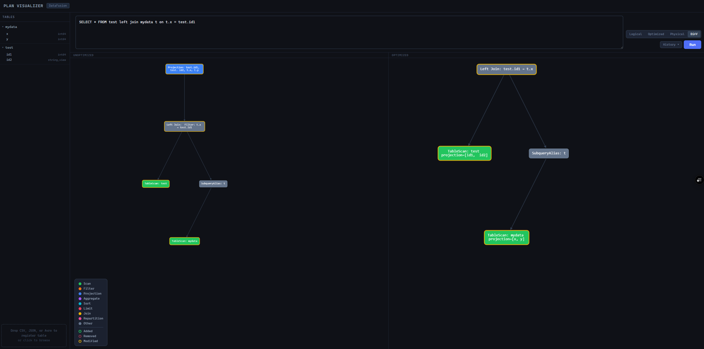
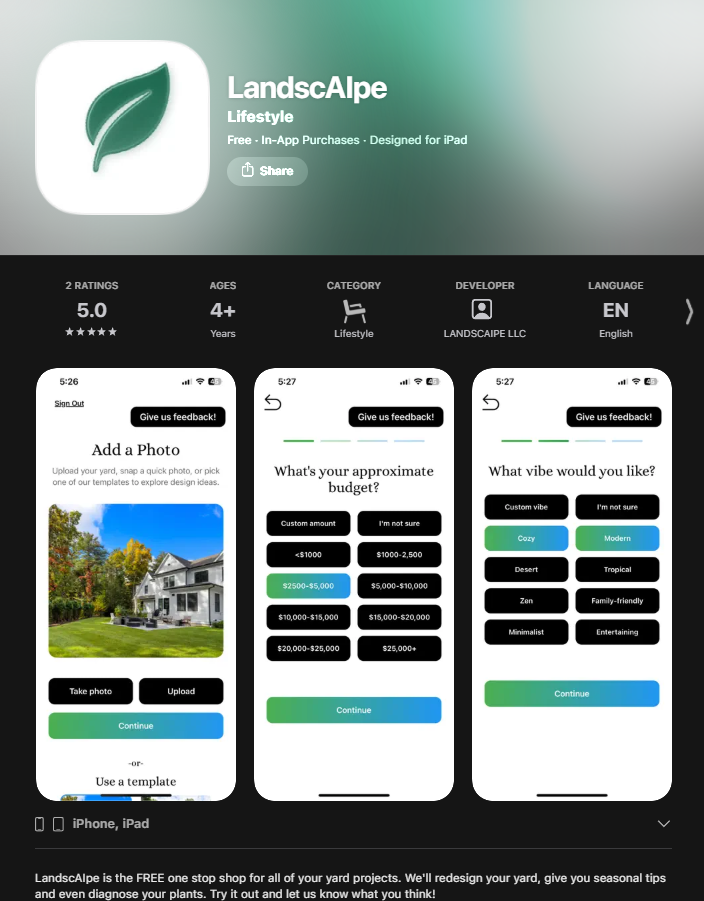
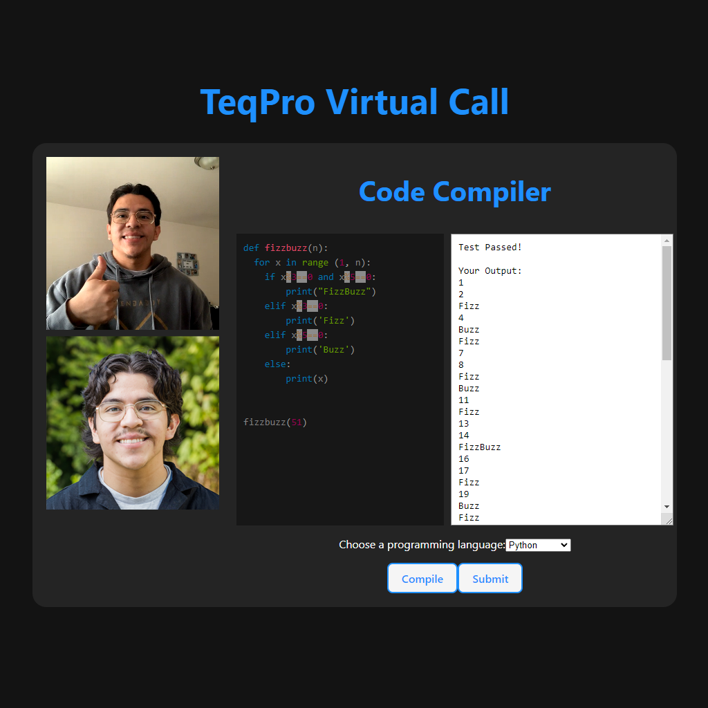
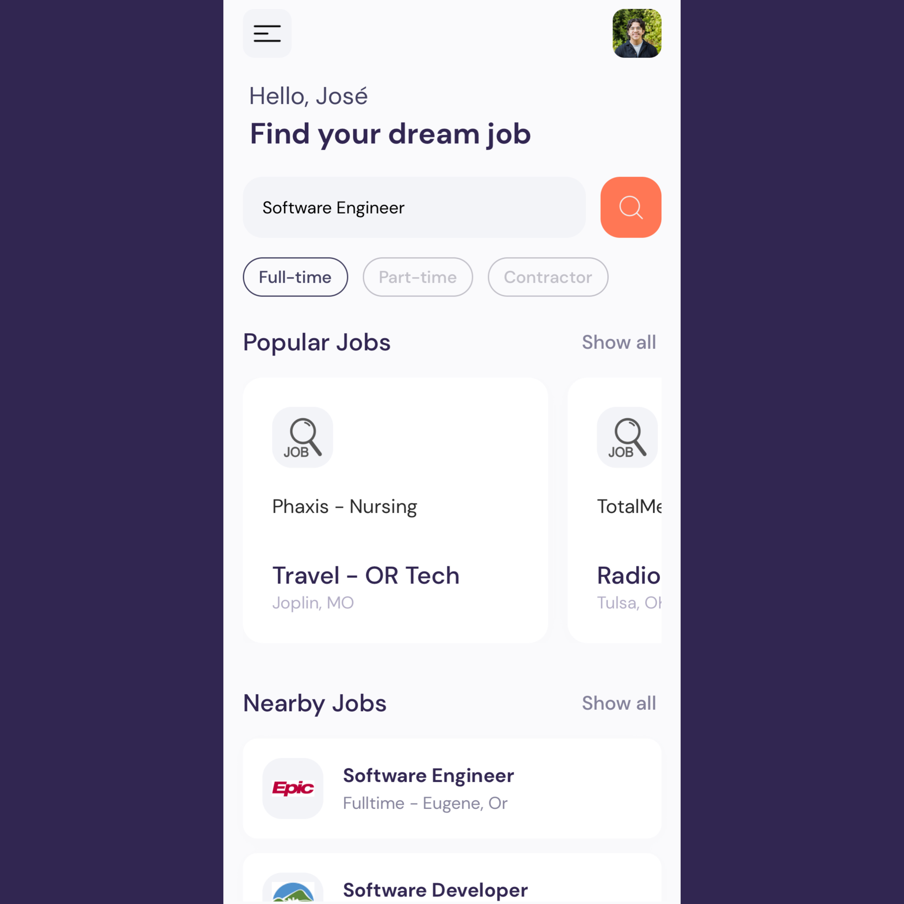
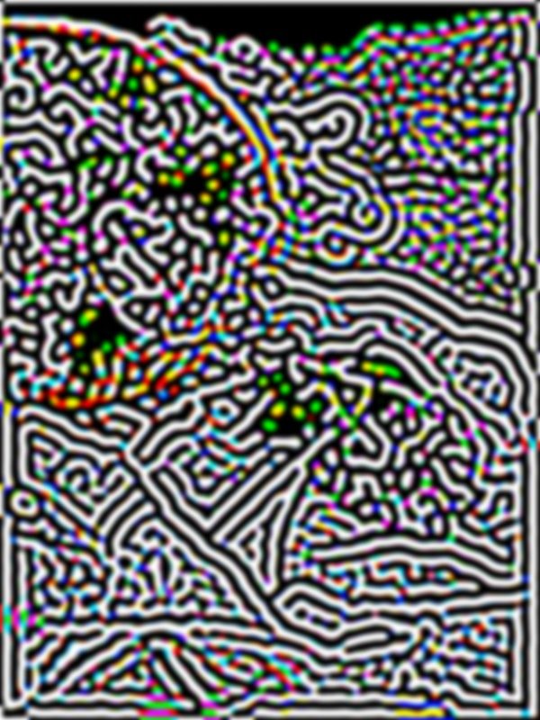
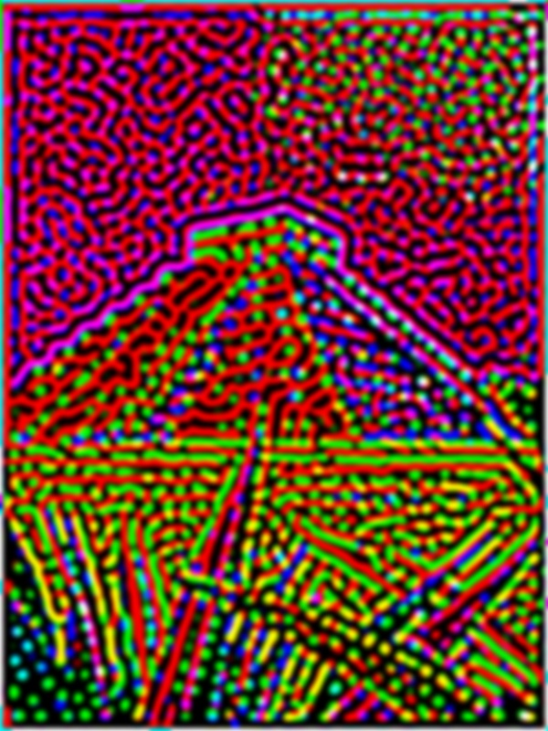

Projects
JrLytics
- A mini OLAP database engine built in Python. JrLytics implements segment-based columnar storage with metadata-driven query optimization on top of Apache DataFusion.
- Github Repository
DataFusion Plan Visualizer
- An interactive web application for visualizing query plans produced by Apache DataFusion. Write SQL against uploaded tables and inspect how DataFusion's query planner decomposes it into a tree of relational operators — across all four plan representations.
- Live Demo
- Github Repository

LandscAIpe
-
LandscAIpe is an Expo/React Native mobile application for AI-powered landscaping design and contractor matching. Live Now on the app store! It targets iOS and Android, backed by Supabase (PostgreSQL + Edge Functions + Storage) and Google Gemini for image generation. It allows homeowners to:
- Photograph their yard
- Select landscaping features and set a budget/vibe
- Generate AI-powered landscape design images
- Receive cost estimates
- Connect with matched local contractors (lead flow)
- Access a "Yard Nerd" AI chat assistant for plant and gardening Q&A
-
The app targets iOS and Android and is published through the Apple App Store and Google Play Store via Expo EAS.

TeqPro
- A cloud-based technical interview SaaS, with live video conferencing and a built-in compiler that supports over 30 of the most popular programming languages including Python, Javascript, C, and C++.
- Live Demo
- Github Repository

Auth Master
- Machine-Generated Text Detection Utility Application using Bidirectional Encoder Representations from Transformers (BERT) Model.
- Github Repository
- Read the Paper
PySonic
- PaaS Grid-Based Python3 code editor for BLV (Blind/Low-Vision) programmers that provides sonic feedback for accessibility and ease of use.
- Github Repository
Dream Job
- A Cross Platform mobile application that facilitates your dream job search.
- Github Repository

Turing Pattern Generator
- Python Image Processing project that generates Turing Patterns, built using OpenCV and Numpy. Inspired by Alan Turing's study, "The Chemical Basis of Morphogenesis"
- Github Repository
 |
 |